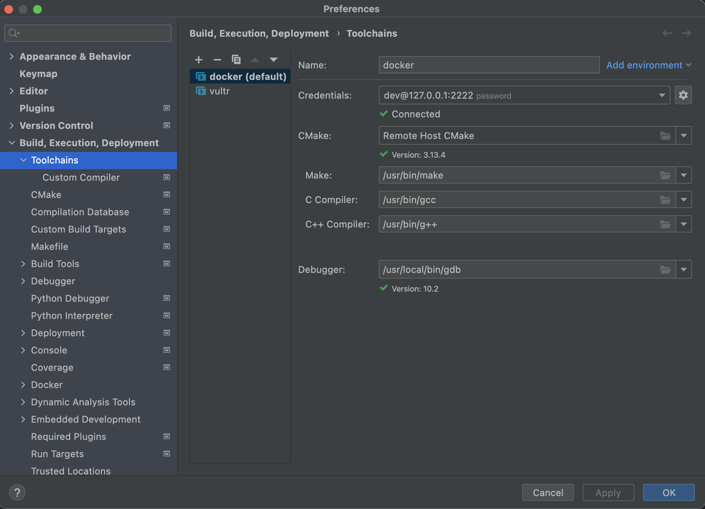
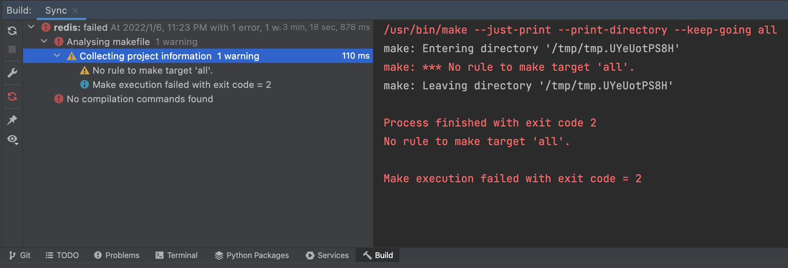
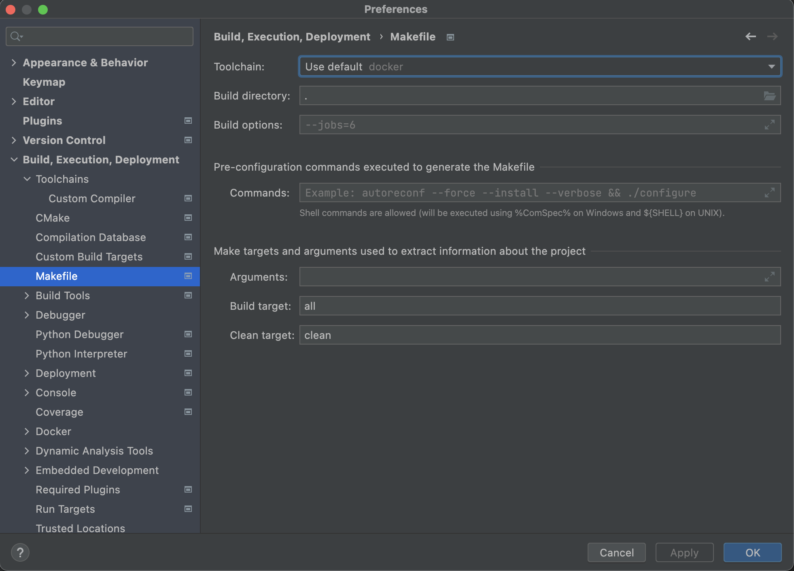
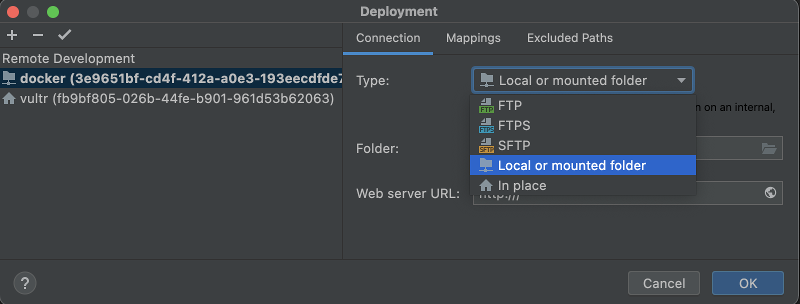
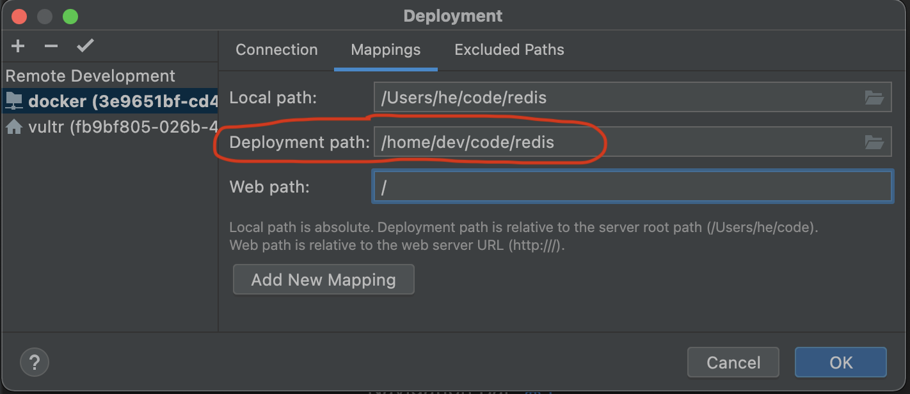
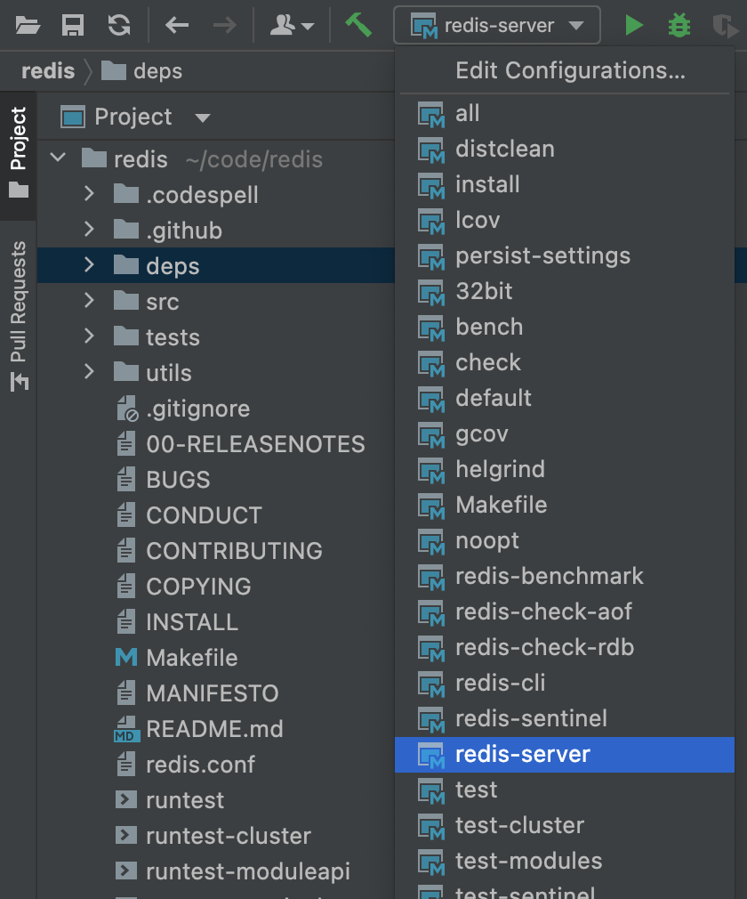
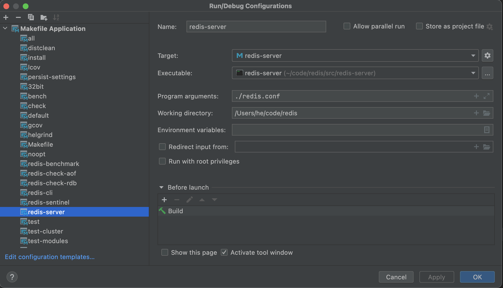

mac clion 通过 docker debian10 调试 redis
目录
参考：
Remote development
using-docker-with-clion
clion 远程调试有多种：
gdbserver/lldb-serverclion 作为 gdb 客户端连接远程 gdbserver 进行调试。有点不太方便，每次需要手动在远程启动 gdbserver；如果调试的是守护进程，clion 终止调试后，守护进程依然存在，还需要手动 kill 掉守护进程full remote modeclion 通过 ssh 登录到远程，在远程启动一个 gdb 进行调试。支持 makefile、cmake。配置好后，调试是全自动的，和本地调试的体验完全一样- …
本文就是第 2 种
1 dockerfile
- 文件名：Dockerfile.clion_remote_cpp_env
- 构建镜像：
$ docker build -t clion/remote-cpp-env:1.0 -f Dockerfile.clion_remote_cpp_env . - 启动容器：
$ docker run -d --cap-add sys_ptrace --security-opt seccomp=unconfined -v /Users/he/code:/home/dev/code:rw -p 127.0.0.1:2222:22/tcp -p 127.0.0.1:6379:6379/tcp --name clion_remote_env clion/remote-cpp-env:1.0 - 关停容器：
$ docker stop clion_remote_env - ssh 连接：
$ ssh dev@127.0.0.1 -p 2222
# CLion remote docker environment (How to build docker container, run and stop it) # # Build and run: # # 其中 --cap-add sys_ptrace 和 --security-opt seccomp=unconfined 都是为 gdb 提供一些权限，防止其报错&方便其使用 # docker build -t clion/remote-cpp-env:1.0 -f Dockerfile.clion_remote_cpp_env . # docker run -d --cap-add sys_ptrace --security-opt seccomp=unconfined -v /Users/he/code:/home/dev/code:rw -p 2222:22/tcp -p 6379:6379/tcp --name clion_remote_env clion/remote-cpp-env:1.0 # # gdbserver 调试时开启调试端口 -p 1234:1234/tcp # # docker run -d --cap-add sys_ptrace --security-opt seccomp=unconfined -v /Users/he/code:/home/dev/code:rw -p 2222:22/tcp -p 6379:6379/tcp -p 1234:1234/tcp --name clion_remote_env clion/remote-cpp-env:1.0 # # 容器新建时 2222 端口被重新使用，有可能需要清理掉 known_hosts 保存的公钥，才能 ssh 访问 # ssh-keygen -f "$HOME/.ssh/known_hosts" -R "[localhost]:2222" && ssh-keygen -f "$HOME/.ssh/known_hosts" -R "[127.0.0.1]:2222" # # ssh credentials: # ssh root@127.0.0.1 -p 2222 # ssh dev@127.0.0.1 -p 2222 FROM debian:10 MAINTAINER shi_zhonghe@163.com RUN mv /etc/apt/sources.list /etc/apt/sources.list_bak && ( \ echo 'deb http://mirrors.aliyun.com/debian/ buster main non-free contrib'; \ echo 'deb http://mirrors.aliyun.com/debian/ buster-updates main non-free contrib'; \ echo 'deb http://mirrors.aliyun.com/debian/ buster-backports main non-free contrib'; \ echo 'deb http://mirrors.aliyun.com/debian-security/ buster/updates main non-free contrib'; \ echo 'deb-src http://mirrors.aliyun.com/debian/ buster main non-free contrib'; \ echo 'deb-src http://mirrors.aliyun.com/debian/ buster-updates main non-free contrib'; \ echo 'deb-src http://mirrors.aliyun.com/debian/ buster-backports main non-free contrib'; \ echo 'deb-src http://mirrors.aliyun.com/debian-security/ buster/updates main non-free contrib'; \ ) > /etc/apt/sources.list # 更换 apt 源 RUN DEBIAN_FRONTEND="noninteractive" apt update && apt -y install tzdata # 方便无人值守构建镜像 RUN apt update \ && apt install -y ssh \ build-essential \ gcc \ g++ \ clang \ cmake \ rsync \ tar \ python \ python-dev \ wget \ pkg-config \ tcl \ && apt clean # apt install gdb 会安装 8.2 版本，低于 8.3 版本时远程调试会有一些问题（忘记记录是啥问题了）。所以这里编译安装高版本 gdb10.2 gdbserver10.2 等 # 编译时，会依赖 texinfo 等 # --with-python 表示 gdb 支持调试 python。clion 调试 c++ 也会用到 python 脚本 pretty-printer，需要设置该项 RUN apt install -y texinfo && apt clean \ && wget https://ftp.gnu.org/gnu/gdb/gdb-10.2.tar.xz && xz -d gdb-10.2.tar.xz && tar -xf gdb-10.2.tar && rm gdb-10.2.tar \ && cd gdb-10.2 && ./configure --with-python && make && make install \ && cd .. && rm -rf gdb-10.2 RUN useradd -m dev \ && yes 123456 | passwd dev \ && usermod -s /bin/bash dev \ && yes 123456 | passwd root # 创建 dev 用户、密码、登录后默认使用 /bin/bash；修改 root 密码 RUN sed -i 's/^#alias ll='"'"'ls -l'"'"'$/alias ll='"'"'ls -l'"'"'/g' /home/dev/.bashrc \ && sed -i 's/^#alias ll='"'"'ls -l'"'"'$/alias ll='"'"'ls -l'"'"'/g' /root/.bashrc # .bashrc 文件修改配置 #alias ll='ls -l' 替换为 alias ll='ls -l' RUN ( \ echo 'LogLevel DEBUG2'; \ echo 'PermitRootLogin yes'; \ echo 'PasswordAuthentication yes'; \ echo 'Subsystem sftp /usr/lib/openssh/sftp-server'; \ ) > /etc/ssh/sshd_config_docker \ && mkdir /run/sshd CMD ["/usr/sbin/sshd", "-D", "-e", "-f", "/etc/ssh/sshd_config_docker"]
2 clion 配置
2.1 clion 中配置连接到 docker 的远程工具链
- 在 clion 中配置连接 docker 容器的
SSH Configurations：ssh dev@127.0.0.1 -p 2222 在 clion 中配置 Toolchains
docker 容器中编译好的 gdb 位于/usr/local/bin/gdb

2.2 clion 中 redis 项目配置 docker 调试
- 在 clion 中点击 Open -> 选中 redis 根目录的 Makefile -> Open -> Open as project。然后会打开 redis 项目并弹窗 Load Project，提示配置 make clean 命令，配置后点击 OK
clion 此时会执行 build 操作，分为 2 步
分析 Makefile 文件提取 Makefile 中的所有 Target，供 clion 使用build即命令$ make all，可在Build,Execution,Deployment->Makefile页配置。按理说应该会进入 docker 容器中的 redis 项目目录（该目录在 clion 中此时还未配置），进行 build
此时会报错。报错提示进入了目录
/tmp/tmp.UYeUotPS8H，目录肯定进错了，暂时不管这个错误，继续向下走

在 clion 中配置 Makefile 页
toolchains 调整为刚才配置的 docker Toolchain

在 clion 中配置 Deployment
Local or mounted folder就用这个。项目目录正是挂载在 docker 中的In place表示项目已经在它该在的位置上了，项目不用执行同步操作。

首次点进 Mappings 页时，红圈
Deployment path项不存在，需要点击Add New Mapping把它搞出来。搞出来后，它的值是/tmp/tmp.UYeUotPS8H，所以步骤 2 报错，改完就好了

然后进入步骤 2 的界面
Reload Makefile Project，然后执行完步骤 2 后，clion 会提取到一些 Makefile 信息，如下图

在 clion 中配置 Makefile Application 用于调试
- 下拉框选中
redis-server后，点击 🔨 编译出redis-server二进制文件；或在 docker 容器中$ make all - 点击
Edit Configurations...->Makefile Application->redis-server Executable项选择编译好的redis-server二进制文件Working directory项填/Users/he/code/redis（为什么是本机目录而非 remote host 目录呢？clion 会把本机目录映射为 remote host 目录的），否则会默认为 redis-server 二进制文件所在目录

- 下拉框选中
- 可以断点 debug 了
2.3 配置过程中的的报错
clion console 报错
Error during pretty printers setup: Error while executing Python code
Some features and performance optimizations will not be available.
打开 clion 日志看一下：Help -> Show Log in Finder -> idea.log
2022-01-10 02:57:50,398 [ 26479] WARN - brains.cidr.execution.debugger - >python import sys; sys.dont_write_bytecode = True; sys.path.insert(0, "tmp/3e9651bf-cd4f-412a-a0e3-193eecdfde7b.clion.resources/pretty_printers/gdb"); from default.printers import register_default_printers; register_default_printers(None); from default.libstdcxx_printers import patch_libstdcxx_printers_module; patch_libstdcxx_printers_module();
2022-01-10 02:57:50,399 [ 26480] WARN - brains.cidr.execution.debugger - <^error,msg="Error while executing Python code."
2022-01-10 02:57:50,399 [ 26480] WARN - brains.cidr.execution.debugger - Error during pretty printers setup: Error while executing Python code.
Some features and performance optimizations will not be available.
com.jetbrains.cidr.execution.debugger.backend.gdb.GDBDriver$GDBCommandException: Error while executing Python code.
分析：
- 其中，日志第一条有个路径
/tmp/3e9651bf-cd4f-412a-a0e3-193eecdfde7b/.clion.resources/pretty_printers/gdb，=3e9651bf-cd4f-412a-a0e3-193eecdfde7b= 是远程主机编号，可以在 clion Deployment 配置里面看到 - 在 docker 容器中有目录
/home/dev/code/tmp/3e9651bf-cd4f-412a-a0e3-193eecdfde7b/.clion.resources/pretty_printers/gdb - 所以肯定是在 docker 容器中，gdb 加载这个 python 路径时，没有
/tmp/3e9651bf-cd4f-412a-a0e3-193eecdfde7b/...这个目录，导致 python module 无法加载 在 docker 容器中，/home/dev/.gdbinit 中添加配置。添加后再用 clion 连接 docker 容器调试，就不会报这个错了
参考：https://sourceware.org/gdb/wiki/STLSupport
python import sys sys.path.insert(0, '/home/dev/code/tmp/3e9651bf-cd4f-412a-a0e3-193eecdfde7b/.clion.resources/pretty_printers/gdb') end
补充：
后来想到，之前曾在 clion -> Deployment 配置 docker 时，Type 配置为 Local or mounted folder ，有个参数 Folder 配置为 /home/dev/code 。估计 clion 把这个目录认为是 docker 容器根目录了，所以才会出现那个无效的 python 搜索路径。删掉容器，删掉项目 .idea 文件，重新配置。Folder 改为 / 就不再报错了，容器内文件 .gdbinit 引入的 python 模块的代码也可以去掉了。